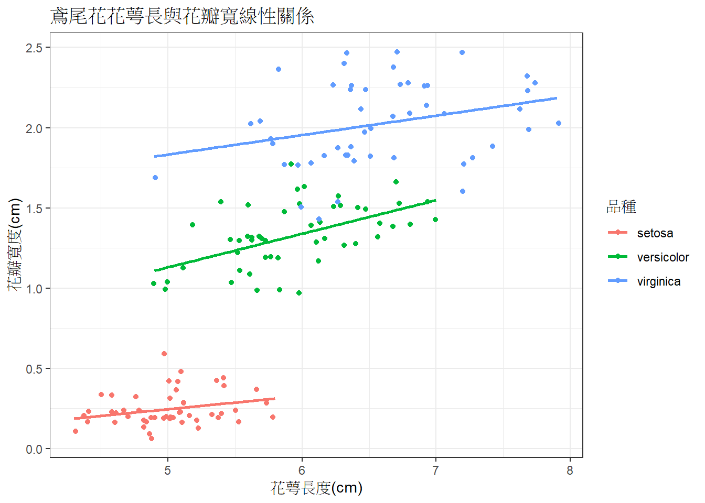

第2 章 開始之前…
事前作業：
- R是必須要安裝的
- RStudio則是R語言的”整合開發環境 (Integrated Development Environment, IDE)，讓你更舒服地撰寫程式，不是必須。
- R就像是英語、RStudio就像是word。
- 強烈建議安裝RStudio，方便管理你的程式與算好的結果。本書程式碼全部都是在RStudio中寫出來的。
2.1 第一個R程式碼
複製下面程式碼，輸入R的介面中並執行。 這是你的第一個R程式碼！
print('Hello world!')## [1] "Hello world!"
本書會包含程式碼(上方灰框)與執行結果(下方灰框)，你可以直接複製貼上程式碼，在你的R介面中執行，比較看看結果是否相同。
你會發現，R語言是一個像是Google助理一樣的工具，輸入一行指令、返回一行結果，這種類型的程式語言叫做直譯語言（Interpreted Language）。
但是，R程式碼也有可能很多行，譬如下面就是一個很常見到的程式碼，用到條件判斷(if)還有+號連結許多不同函數。
2.2 第一張圖
你可以將下面程式碼複製後，整個貼到你的RStudio介面或是R中執行，畫出你的第一張圖：
pkg = c('magrittr','ggplot2')
if ( any(pkg) %in% installed.packages() == TRUE) install.packages(pkg[!pkg %in% rownames(installed.packages())])
invisible(lapply(pkg, library, character.only = TRUE))
ggplot(data = iris, mapping = aes(x = Sepal.Length, y = Petal.Width, color = Species))+
geom_jitter()+
geom_smooth(se=F)+
theme_bw()+
labs(x='花萼長度(cm)',
y='花瓣寬度(cm)',
color = '品種',
title = '3種鳶尾花花萼長與花瓣寬線性關係')
你可能會問，鳶尾花是什麼? 哪來的鳶尾花?
上面的圖中，我使用到的鳶尾花(iris)資料集，是R. A. Fisher在1938年出版的The Use of Multiple Measurements in Taxonomic Problems中使用到的資料集。
這個資料集非常有名，包含有加拿大加斯帕半島採集到的三種鳶尾花品種形態資料。（葉茂生老師說：形不是型！不可以弄錯）
像這樣的資料集有非常多筆已經內建在R程式裡面，他們可以用簡單的指令叫出來。
在後續的程式碼中，可能會用到不同範例資料來討論。